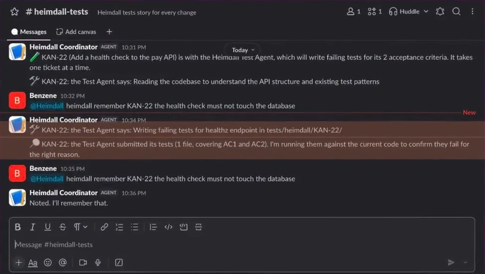
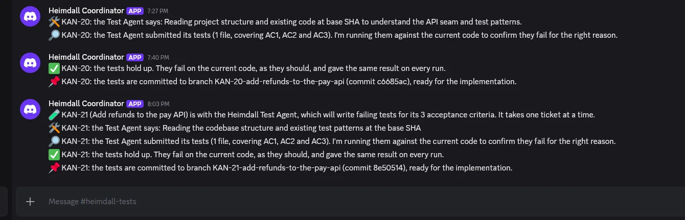
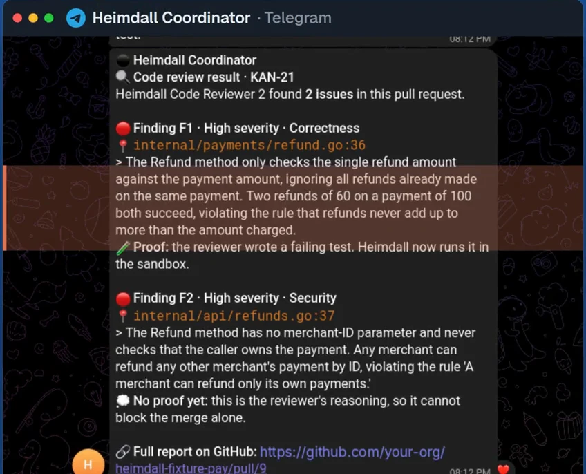
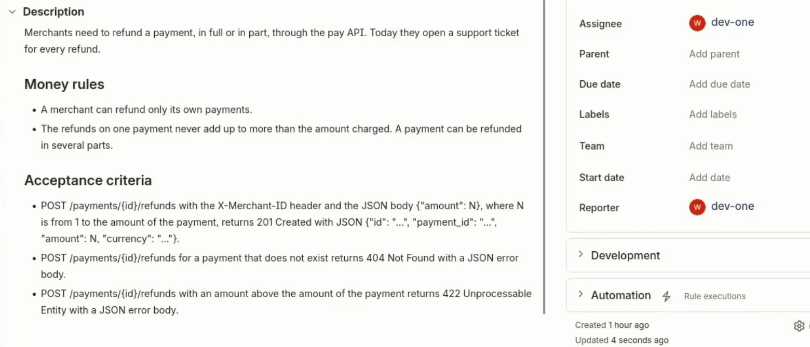

Proof, not opinion
A model can suggest a bug. Only a test can block the merge.

Heimdall writes a test for each AI review finding and runs it in a sealed sandbox. If the test fails on your pull request and passes on the fix, the merge stops.
How it works
Follow one change through Heimdall. Agents write the tests, the code and the reviews. Only a proven bug can stop the merge.
KAN-21In Progress
Acceptance criteria
AC1A refund up to the amount charged returns 201.AC2A refund for an unknown payment returns 404.AC3A refund above the amount charged returns 422.Money rules
Heimdall opens a branch and a team room for the ticket.
tests/heimdall/KAN-21/refund_test.go
AC1TestRefundUpToChargeFails on current codeAC2TestRefundUnknownPaymentFails on current codeAC3TestRefundAboveChargeFails on current codeRed first. A test that passes now proves nothing, so Heimdall refuses it. A build error is refused too.
Committed and pinned. The coding agent cannot change these tests.
Team rules the agent reads over MCP
The agent can read the rules. It cannot write or change them.

 Pull request #9 opened. 4 files changed.
Pull request #9 opened. 4 files changed.
Heimdall reviewers, each with lenses for this change
Each reviewer reads its own context: the team rules for the changed paths, a map of the code and past findings.
Your review bots
5 claims to check. The same rule applies to every one.
Proof is a test that finds the bug two times on the pull request and passes when the suspect lines are reverted.
heimdall/fastTests and integrity checks passedheimdall/proof1 proven bug: F1. Merge blockedPPriyaheimdall uphold F1
HeimdallF1 upheld by Priya. The block stays until the fix.
e4c19a2The agent pushes a fix for F1heimdall/proofF1 test passes. No proven bugsapprovalA teammate approves commit e4c19a2Merged
SSamheimdall dismiss F3 lookups return an error, never nil
approvedThe owner approves the rulenext changeReviewers and coding agents read itOnly a person can create a rule. A model never writes its own rules.
Integrations
It reads your code and tickets, runs in your CI, uses the model you pick and talks in your team chat.
Team chat
Findings and commands in your room.
 Slack
Slack Discord
Discord Telegram
Telegram Mattermost
Mattermost Teams
TeamsCode and tickets
Where the work starts and merges.

 GitHub
GitHubModels
Any OpenAI-compatible API.
 OpenRouter
OpenRouter Ollama
Ollama DeepSeek
DeepSeekTeam chat
Heimdall posts each finding to your team room. A proven finding says so. A finding without proof says that it cannot block the merge. A person answers with one command.
heimdall uphold F1Keep the blockheimdall dismiss F1 reasonRemove it, with a reason



Set up
Heimdall starts in report-only mode. It blocks nothing until you turn on enforcement.
You need admin access to the repository, the gh CLI, Go 1.27 and a model key.
Set up Heimdall on OWNER/REPO in GitHub Action mode. Follow https://github.com/prathameshk421/Heimdall/blob/main/skills/heimdall-setup/SKILL.mdPaste it into your coding agent. The agent shows the plan first, never reads your key and opens a pull request for you to merge.
# Build the CLI
$ git clone https://github.com/prathameshk421/Heimdall.git && cd Heimdall
$ CGO_ENABLED=0 go build -o heimdall ./cmd/heimdall
# See the plan, then apply it
$ ./heimdall action init -repo OWNER/REPO -dir CHECKOUT
$ ./heimdall action init -repo OWNER/REPO -dir CHECKOUT -apply -model-key-stdin < KEY_FILEThe command writes three workflows and a policy file. You merge them like any other change.
Why Heimdall
A model can suggest a bug. Only a test can block the merge.
Code under test has no network and no extra privileges. If the sandbox cannot start, the run stops.
One binary in your CI, or a small VM for the whole team.
A cost check runs before each model call.
Heimdall reads each test change. It flags 9 types of cheats in 5 language families.
Only a person who is not the author can approve, and only the latest commit.
Open by design
Use any OpenAI-compatible API. A local model needs no key.
OpenRouterOllamaDeepSeekvLLMRun it in your GitHub Actions, or on your own VM. Your code stays with you. No inbound ports.
Keep the bots you have. Heimdall applies the same proof rule to their comments.
 CopilotBugbotGreptile
CopilotBugbotGreptile